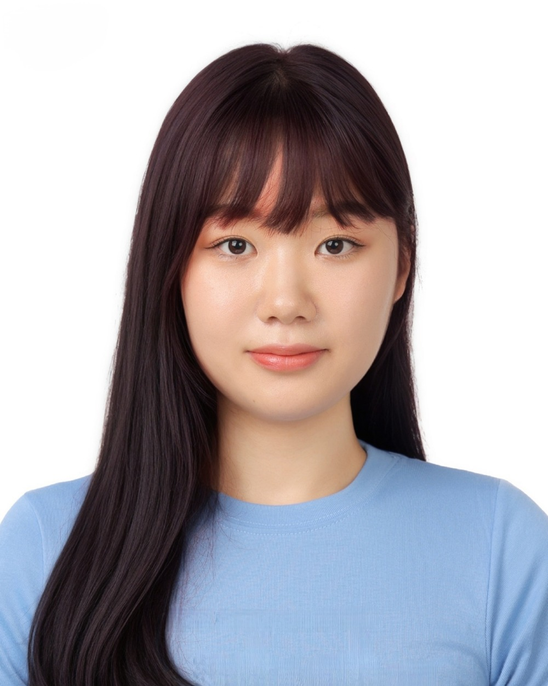
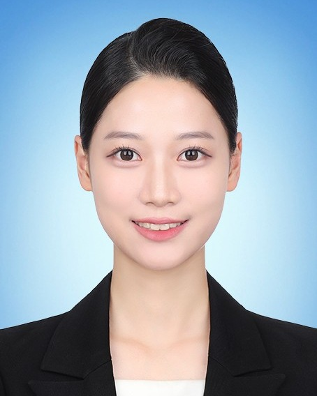
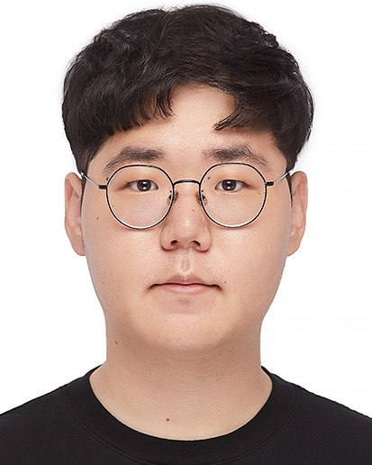
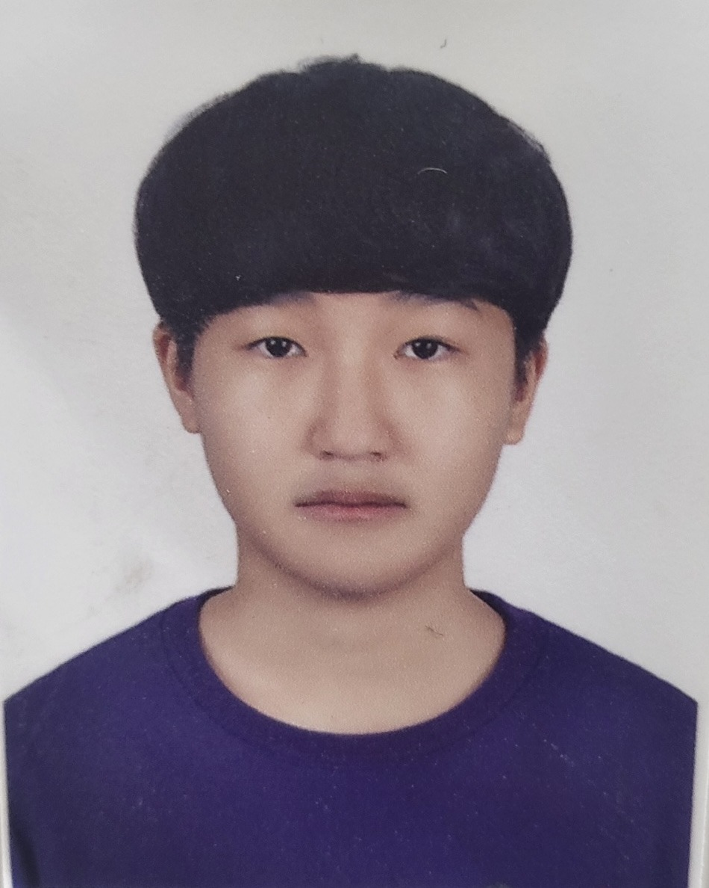

연구분야 / 01 · REMAINING LIFE
상하수도 관로 잔존수명 예측
관로의 노후화·손상 상태와 위험요인을 분석하여 잔존수명을 추정하고, 개량 및 교체 의사결정을 지원합니다.
상하수도 관로의 잔존수명 예측, 자산관리, AI 기반 운영 최적화를 통해 안전하고 지속가능한 상하수도 시스템을 연구합니다.
EVE LAB은 단국대학교 김두일 교수님이 이끄는 상하수도공학 연구실입니다.
노후 관로의 잔존수명 예측과 자산관리, AI를 활용한 수질·시설 운영 분석을 핵심으로, 정수·하수처리 공정 최적화와 고도수처리까지 폭넓게 연구합니다.
관로 잔존수명, 인프라 자산관리, AI 기반 예측을 중심으로 상하수도 처리공정의 효율적 운영까지 연결합니다.
관로의 노후화·손상 상태와 위험요인을 분석하여 잔존수명을 추정하고, 개량 및 교체 의사결정을 지원합니다.
시설 상태·위험도·서비스 수준과 생애주기비용을 고려해 유지보수 전략과 투자·갱신 우선순위를 평가합니다.
수질·공정 운영자료와 시설 점검 데이터를 활용해 수질 및 결함을 예측하고, 데이터 기반 운영 의사결정을 지원합니다.
고도정수처리, 오존·AOP, 분리막 및 물 재이용 기술과 정수·하수처리시설 운영 최적화를 연구합니다.
오존/AOP 및 UV 연구 · 수처리 시스템 최적화·자동화 · 하수재이용 · 해수담수화 · 상수고도처리
연구분야 출처: 단국대학교 교원정보 ↗

단국대학교 공과대학 인프라건설공학과
김두일 교수는 서울대학교 토목공학과에서 학사·석사학위를 취득하고, 미국 조지아 공과대학교(Georgia Institute of Technology)에서 환경공학 분야 박사학위를 받았습니다.
단국대학교 부임 전 포스코건설, 한국과학기술연구원(KIST), 삼성건설에서 약 10년간 물산업 및 환경공학 연구·실무를 수행했습니다. 당시 해수담수화와 하수재이용, 고도정수처리, 분리막·자외선 처리, 고도하수처리 분야를 경험했습니다.
주요 연구 관심사는 분리막 기반 수처리, 오존·고도산화공정(AOP), 상수관망 관리, 상하수도 처리시설의 운영 최적화입니다. 오존접촉조 해석·설계 및 잔류오존·브롬산 생성 등을 예측하는 장치와 모델 개발도 수행했습니다.
공식 교수소개 원문 및 연구분야 확인 ↗공학박사 · 건설·환경공학과
조지아 공과대학교 (Georgia Tech)
공학석사 · 토목공학과 도시공학전공
서울대학교
학사 · 토목공학과 도시공학전공
서울대학교
포스코건설
담수화, 물 재이용 및 고도수처리
한국과학기술연구원(KIST)
막분리 담수화 및 자외선 처리 연구
삼성건설
고도하수처리 관련 연구 및 실무
2026년 강의 기록 중 일부이며, 학기별 개설 여부는 달라질 수 있습니다.
상하수도 인프라, 자산관리 및 AI 기반 기술을 연구하는 EVE LAB 구성원들을 소개합니다.

석사과정

석사과정

석사과정

학부연구생
EVE LAB의 대학원 진학 또는 학부연구생 활동에 관심 있는 학생은 아래 연락처로 문의해 주시기 바랍니다.
입학·학부연구생 문의하기단국대학교 죽전캠퍼스
제1공학관 216호
경기도 용인시 수지구 죽전로 152
dikim21@dankook.ac.kr
+82-31-8005-3610
단국대학교 교수정보 ↗